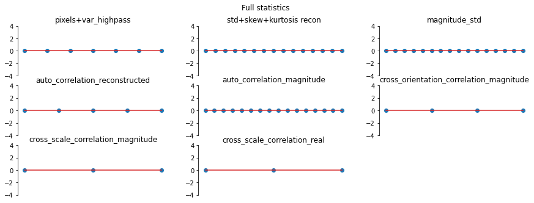
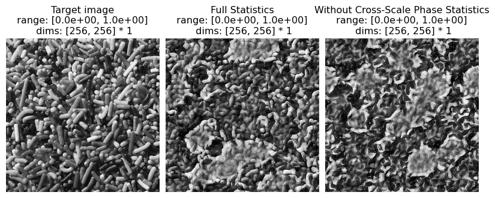
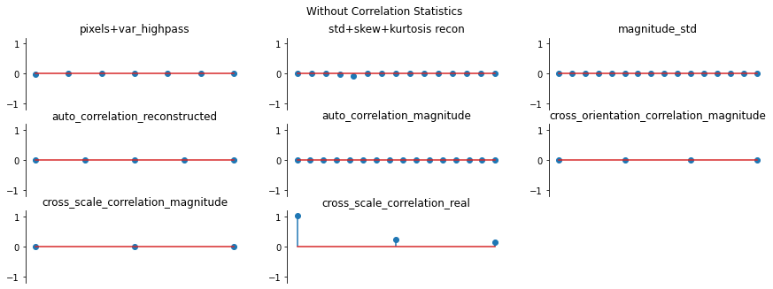
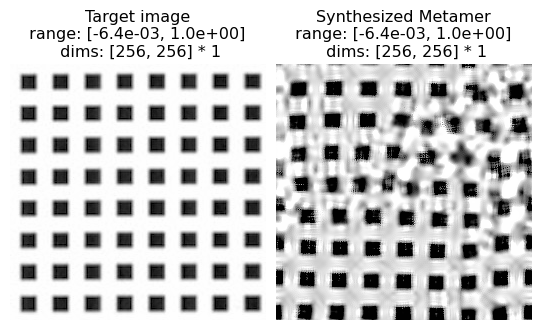

Download
Download this notebook: Portilla-Simoncelli.ipynb!
Portilla-Simoncelli Texture Metamer
In this tutorial we will aim to replicate Portilla & Simoncelli (1999). The tutorial is broken into the following parts:
Introduce the concept of a Visual Texture.
How to synthesize metamers for the Portilla & Simoncelli texture model.
Demonstrate the importance of different classes of statistics.
Example syntheses from different classes of textures (e.g., artificial, Julesz, pseudoperiodic, etc.)
Extrapolation and Mixtures: Applying texture synthesis to more complex texture problems.
Some model limitations.
List of notable differences between the MATLAB and python implementations of the Portilla Simoncelli texture model and texture synthesis.
Note that this notebook takes a long time to run (roughly an hour with a GPU, several hours without), because of all the metamers that are synthesized.
import einops
import matplotlib.pyplot as plt
import torch
import plenoptic as po
%load_ext autoreload
%autoreload
# We need to download some additional images for this notebook. In order to do so,
# we use an optional dependency, pooch. If the following raises an ImportError or
# ModuleNotFoundError
# then install pooch in your plenoptic environment and restart your kernel.
from plenoptic.data.fetch import fetch_data
DATA_PATH = fetch_data("portilla_simoncelli_images.tar.gz")
DEVICE = torch.device("cuda" if torch.cuda.is_available() else "cpu")
# so that relative sizes of axes created by po.imshow and others look right
plt.rcParams["figure.dpi"] = 72
# set seed for reproducibility
po.tools.set_seed(1)
# These variables control how long metamer synthesis runs for. The values present
# here will result in completed synthesis, but you may want to decrease these numbers
# if you're on a machine with limited resources.
short_synth_max_iter = 1000
long_synth_max_iter = 3000
longest_synth_max_iter = 4000
1. What is a visual texture?
The simplest definition is a repeating visual pattern. Textures encompass a wide variety of images, including natural patterns such as bark or fur, artificial ones such as brick, and computer-generated ones such as the Julesz patterns (Julesz 1978, Yellot 1993). Below we load some examples.
The Portilla-Simoncelli model was developed to measure the statistical properties of visual textures. Metamer synthesis was used (and can be used) in conjunction with the Portilla-Simoncelli texture model to demonstrate the necessity of different properties of the visual texture. We will use some of these example textures to demonstrate aspects of the Portilla Simoncelli model.
# Load and display a set of visual textures
def display_images(im_files, title=None):
images = po.tools.load_images(im_files)
fig = po.imshow(images, col_wrap=4, title=None)
if title is not None:
fig.suptitle(title, y=1.05)
natural = [
"3a",
"6a",
"8a",
"14b",
"15c",
"15d",
"15e",
"15f",
"16c",
"16b",
"16a",
]
artificial = ["4a", "4b", "14a", "16e", "14e", "14c", "5a"]
hand_drawn = ["5b", "13a", "13b", "13c", "13d"]
im_files = [DATA_PATH / f"fig{num}.jpg" for num in natural]
display_images(im_files, "Natural textures")

im_files = [DATA_PATH / f"fig{num}.jpg" for num in artificial]
display_images(im_files, "Articial textures")

im_files = [DATA_PATH / f"fig{num}.jpg" for num in hand_drawn]
display_images(im_files, "Hand-drawn / computer-generated textures")

2. How to generate Portilla-Simoncelli Metamers
2.1 A quick reminder of what metamers are and why we are calculating them.
The primary reason that the original Portilla-Simoncelli paper developed the metamer procedure was to assess whether the model’s understanding of textures matches that of humans. While developing the model, the authors originally evaluated it by performing texture classification on a then-standard dataset (i.e., “is this a piece of fur or a patch of grass?”). The model aced the test, with 100% accuracy. After an initial moment of elation, the authors decided to double-check and performed the same evaluation with a far simpler model, which used the steerable pyramid to compute oriented energy (the first stage of the model described here). That model also classified the textures with 100% accuracy. The authors interpreted this as their evaluation being too easy, and sought a method that would allow them to determine whether their model better matched human texture perception.
In the metamer paradigm they eventually arrived at, the authors generated model metamers: images with different pixel values but (near-)identical texture model outputs. They then evaluated whether these images belonged to the same texture class: does this model metamer of a basket also look like a basket, or does it look like something else? Importantly, they were not evaluating whether the images were indistinguishable, but whether they belonged to the same texture family. This paradigm thus tests whether the model is capturing important information about how humans understand and group textures.
2.2 How do we use the plenoptic package to generate Portilla-Simoncelli Texture Metamers?
Generating a metamer starts with a target image:
img = po.tools.load_images(DATA_PATH / "fig4a.jpg")
po.imshow(img)

Below we have an instance of the PortillaSimoncelli model with default parameters:
n_scales=4, The number of scales in the steerable pyramid underlying the model.n_orientations=4, The number of orientations in the steerable pyramid.spatial_corr_width=9, The size of the window used to calculate the correlations across steerable pyramid bands.
Running the model on an image will return a tensor of numbers summarizing the “texturiness” of that image, which we refer to as the model’s representation. These statistics are measurements of different properties that the authors considered relevant to a texture’s appearance (where a texture is defined above), and capture some of the repeating properties of these types of images. Section 3 of this notebook explores those statistics and how they relate to texture properties.
When the model representation of two images match, the model considers the two images identical and we say that those two images are model metamers. Synthesizing a novel image that matches the representation of some arbitrary input is the goal of the Metamer class.
n = img.shape[-1]
model = po.simul.PortillaSimoncelli([n, n])
stats = model(img)
print(stats)
tensor([[[ 0.4350, 0.0407, 0.1622, ..., -0.0078, -0.2282, 0.0023]]])
To use Metamer, simply initialize it with the target image and the model, then call .synthesize(). By setting store_progress=True, we update a variety of attributes (all of which start with saved_) on each iteration so we can later examine, for example, the synthesized image over time. Let’s quickly run it for just 10 iterations to see how it works.
met = po.synth.Metamer(img, model)
met.synthesize(store_progress=True, max_iter=10)
We can then call the plot_synthesis_status method to see how things are doing. The image on the left shows the metamer at this moment in synthesis, while the center plot shows the loss over time, with the red dot pointing out the current loss, and the rightmost plot shows the representation error. For the texture model, we plot the difference in representations split up across the different category of statistics (which we’ll describe in more detail later).
# representation_error plot has three subplots, so we increase its relative width
po.synth.metamer.plot_synthesis_status(
met, width_ratios={"plot_representation_error": 3.1}
)
(<Figure size 2131.2x360 with 11 Axes>,
{'display_metamer': 0,
'plot_loss': 1,
'plot_representation_error': [3, 4, 5, 6, 7, 8, 9, 10, 2],
'misc': []})

2.3 Portilla-Simoncelli Texture Model Metamers
This section will show a successful texture synthesis for this wicker basket texture:
po.imshow(img);
In the next block we will actually generate a metamer using the PortillaSimoncelli model, setting the following parameters for synthesis: max_iter, store_progress,coarse_to_fine, and coarse_to_fine_kwargs.
max_iter=1000puts an upper bound (of 1000) on the number of iterations that the optimization will run.store_progress=Truetells the metamer class to store the progress of the metamer synthesis processcoarse_to_fine='together'activates the coarse_to_fine functionality. With this mode turned on the metamer synthesis optimizes the image for the statistics associated with the low spatial frequency bands first, adding subsequent bands afterctf_iters_to_checkiterations.
It takes about 50s to run 100 iterations on my laptop. And it takes hundreds of iterations to get convergence. So you’ll have to wait a few minutes to generate the texture metamer.
Note: we initialize synthesis with im_init, an initial uniform noise image with range mean(target_signal)+[-.05,.05]. Initial images with uniform random noise covering the full pixel domain [0,1] (which is the default choice for Metamer) don’t result in the very best metamers. With the full range initial image, the optimization seems to get stuck.
# send image and PS model to GPU, if available. then im_init and Metamer will also
# use GPU
img = img.to(DEVICE)
model = po.simul.PortillaSimoncelli(img.shape[-2:]).to(DEVICE)
im_init = (torch.rand_like(img) - 0.5) * 0.1 + img.mean()
met = po.synth.MetamerCTF(
img,
model,
loss_function=po.tools.optim.l2_norm,
coarse_to_fine="together",
)
met.setup(im_init)
o = met.synthesize(
max_iter=short_synth_max_iter,
store_progress=True,
# setting change_scale_criterion=None means that we change scales every
# ctf_iters_to_check, see the metamer notebook for details.
change_scale_criterion=None,
ctf_iters_to_check=7,
)
/home/jenkins/workspace/neurorse_plenoptic_PR-358@2/lib/python3.11/site-packages/plenoptic/tools/validate.py:343: UserWarning: Validating whether model can work with coarse-to-fine synthesis -- this can take a while!
warnings.warn(
/home/jenkins/workspace/neurorse_plenoptic_PR-358@2/lib/python3.11/site-packages/plenoptic/synthesize/metamer.py:932: UserWarning: Loss has converged, stopping synthesis
warnings.warn("Loss has converged, stopping synthesis")
Now we can visualize the output of the synthesis optimization. First we compare the Target image and the Synthesized image side-by-side. We can see that they appear perceptually similar — that is, for this texture image, matching the Portilla-Simoncelli texture stats gives you an image that the human visual system also considers similar.
po.imshow(
[met.image, met.metamer],
title=["Target image", "Synthesized metamer"],
vrange="auto1",
);

And to further visualize the result we can plot: the synthesized image, the synthesis loss over time, and the final model output error: model(target image) - model(synthesized image).
We can see the synthesized texture on the leftmost plot. The overall synthesis error decreases over the synthesis iterations (subplot 2). The remaining plots show us the error broken out by the different texture statistics that we will go over in the next section.
po.synth.metamer.plot_synthesis_status(
met, width_ratios={"plot_representation_error": 3.1}
)
(<Figure size 2131.2x360 with 11 Axes>,
{'display_metamer': 0,
'plot_loss': 1,
'plot_representation_error': [3, 4, 5, 6, 7, 8, 9, 10, 2],
'misc': []})

# For the remainder of the notebook we will use this helper function to
# run synthesis so that the cells are a bit less busy.
# Be sure to run this cell.
def run_synthesis(img, model, im_init=None):
r"""Performs synthesis with the full Portilla-Simoncelli model.
Parameters
----------
img : Tensor
A tensor containing an img.
model :
A model to constrain synthesis.
im_init: Tensor
A tensor to start image synthesis.
Returns
-------
met: Metamer
Metamer from the full Portilla-Simoncelli Model
"""
if im_init is None:
im_init = torch.rand_like(img) * 0.01 + img.mean()
met = po.synth.MetamerCTF(
img,
model,
loss_function=po.tools.optim.l2_norm,
coarse_to_fine="together",
)
met.setup(im_init)
met.synthesize(
max_iter=long_synth_max_iter,
store_progress=True,
change_scale_criterion=None,
ctf_iters_to_check=3,
)
return met
3. The importance of different classes Texture Statistics
The Portilla-Simoncelli consists of a few different classes of statistics:
Marginal Statistics. These include pixel statistics (mean, variance, skew, kurtosis, and range of the pixel values), as well as the skewness and kurtosis of the lowpass images computed at each level of the recursive pyramid decomposition.
Auto-Correlation Statistics. These include the auto-correlation of the real-valued pyramid bands, as well as the auto-correlation of the magnitude of the pyramid bands, and the mean of the magnitude of the pyramid bands.
Cross-Correlation Statistics. These include correlations across scale and across orientation bands of the pyramid (both for the real values of the pyramid and for the magnitude of the pyramid bands).
The original paper uses synthesis to demonstrate the role of these different types of statistics. They show that the statistics can be used to constrain a synthesis optimization to generate new examples of textures. They also show that the absence of subsets of statistics results in synthesis failures. Here we replicate those results.
In order to do so, we must create a version of the Portilla Simoncelli model where certain statistics can be turned off. If you are interested in the implementation, see the following dropdown sections.
Implementation details
There are two important implementation details here, which you might be interested in if you’d like to write a similar extension of this model, and they both relate to coarse-to-fine synthesis. When removing statistics from the model, the most natural implementation would be to remove them from the model’s representation, changing the shape of the returned tensor. However, in order for coarse-to-fine synthesis to work, we need to know which scale each statistic aligns with, and changing the shape destroys that mapping. Therefore, the proper way to remove statistics (in order to remain compatible with coarse-to-fine optimization) is to zero out those statistics instead: directly setting them to zero breaks the gradient so that they have no impact on the synthesis procedure. The second detail is that, during coarse-to-fine optimization, we must remove some set of statistics, which we do by calling the remove_scales method at the end of the function call. See the forward call below for an example of this.
Show code cell content
# The following class extends the PortillaSimoncelli model so that you can specify
# which statistics you would like to remove. We have created this model so that we
# can examine the consequences of the absence of specific statistics.
# Be sure to run this cell.
from collections import OrderedDict
class PortillaSimoncelliRemove(po.simul.PortillaSimoncelli):
r"""Model for measuring a subset of texture statistics reported by
PortillaSimoncelli
Parameters
----------
im_shape: int
the size of the images being processed by the model
remove_keys: list
The dictionary keys for the statistics we will "remove". In practice we set
them to zero.
Possible keys: ["pixel_statistics", "auto_correlation_magnitude",
"skew_reconstructed", "kurtosis_reconstructed",
"auto_correlation_reconstructed", "std_reconstructed", "magnitude_std",
"cross_orientation_correlation_magnitude", "cross_scale_correlation_magnitude",
"cross_scale_correlation_real", "var_highpass_residual"]
"""
def __init__(
self,
im_shape,
remove_keys,
):
super().__init__(im_shape, n_scales=4, n_orientations=4, spatial_corr_width=9)
self.remove_keys = remove_keys
def forward(self, image, scales=None):
r"""Generate Texture Statistics representation of an image with `remove_keys`
removed.
Parameters
----------
image : torch.Tensor
A tensor containing the image to analyze.
scales : list, optional
Which scales to include in the returned representation. If an empty
list (the default), we include all scales. Otherwise, can contain
subset of values present in this model's ``scales`` attribute.
Returns
-------
representation: torch.Tensor
3d tensor of shape (batch, channel, stats) containing the measured texture
stats.
"""
# create the representation tensor (with all scales)
stats_vec = super().forward(image)
# convert to dict so it's easy to zero out the keys we don't care about
stats_dict = self.convert_to_dict(stats_vec)
for kk in self.remove_keys:
# we zero out the stats (instead of removing them) because removing them
# makes it difficult to keep track of which stats belong to which scale
# (which is necessary for coarse-to-fine synthesis) -- see discussion above.
if isinstance(stats_dict[kk], OrderedDict):
for key, val in stats_dict[kk].items():
stats_dict[kk][key] *= 0
else:
stats_dict[kk] *= 0
# then convert back to tensor and remove any scales we don't want
# (for coarse-to-fine) -- see discussion above.
stats_vec = self.convert_to_tensor(stats_dict)
if scales is not None:
stats_vec = self.remove_scales(stats_vec, scales)
return stats_vec
Pixel Statistics + Marginal statistics
Beginning with some of the pixel and marginal statistics, we’ll demonstrate synthesis both with and without combinations of statistics.
The cell below replicates examples of synthesis failures with the following statistics removed:
the pixel statistics: mean, variance, skew, kurtosis, minimum, maximum and
marginal statistics on the lowpass images computed at each level of the recursive pyramid (skew, kurtosis)
These statistics play an important role constraining the histogram of pixel intensities to match across the original and synthesized image.
(see figure 3 of Portilla & Simoncelli 2000)
# which statistics to remove
remove_statistics = [
"pixel_statistics",
"skew_reconstructed",
"kurtosis_reconstructed",
]
# run on fig3a or fig3b to replicate paper
img = po.tools.load_images(DATA_PATH / "fig3b.jpg").to(DEVICE)
# synthesis with full PortillaSimoncelli model
model = po.simul.PortillaSimoncelli(img.shape[-2:]).to(DEVICE)
metamer = run_synthesis(img, model)
# synthesis with pixel and marginal statistics absent
model_remove = PortillaSimoncelliRemove(
img.shape[-2:], remove_keys=remove_statistics
).to(DEVICE)
metamer_remove = run_synthesis(img, model_remove)
In the following figure, we can see that not only does the metamer created with all statistics look more like the target image than the one created without the marginal statistics, but its pixel intensity histogram is much more similar to that of the target image.
# visualize results
fig = po.imshow(
[metamer.image, metamer.metamer, metamer_remove.metamer],
title=["Target image", "Full Statistics", "Without Marginal Statistics"],
vrange="auto1",
)
# add plots showing the different pixel intensity histograms
fig.add_axes([0.33, -1, 0.33, 0.9])
fig.add_axes([0.67, -1, 0.33, 0.9])
# this helper function expects a metamer object. see the metamer notebook for details.
po.synth.metamer.plot_pixel_values(metamer, ax=fig.axes[3])
fig.axes[3].set_title("Full statistics")
po.synth.metamer.plot_pixel_values(metamer_remove, ax=fig.axes[4])
fig.axes[4].set_title("Without marginal statistics")
Text(0.5, 1.0, 'Without marginal statistics')

Coefficient Correlations
The cell below replicates examples of synthesis failures with the following statistics removed:
local auto-correlations of the lowpass images computed at each level of the recursive pyramid
These statistics play a role in representing periodic structures and long-range correlations. For example, in the image named fig4b.jpg (the tile pattern) the absence of these statistics causes results in more difficulty synthesizing the long, continuous lines that stretch from one end of the image to the other.
(see figure 4 of Portilla & Simoncelli 2000)
# which statistics to remove. note that, in the original paper, std_reconstructed is
# implicitly contained within auto_correlation_reconstructed, view the section on
# differences between plenoptic and matlab implementation for details
remove_statistics = ["auto_correlation_reconstructed", "std_reconstructed"]
# run on fig4a or fig4b to replicate paper
img = po.tools.load_images(DATA_PATH / "fig4b.jpg").to(DEVICE)
# synthesis with full PortillaSimoncelli model
model = po.simul.PortillaSimoncelli(img.shape[-2:]).to(DEVICE)
metamer = run_synthesis(img, model)
# synthesis with coefficient correlations absent
model_remove = PortillaSimoncelliRemove(
img.shape[-2:], remove_keys=remove_statistics
).to(DEVICE)
metamer_remove = run_synthesis(img, model_remove)
# visualize results
po.imshow(
[metamer.image, metamer.metamer, metamer_remove.metamer],
title=[
"Target image",
"Full Statistics",
"Without Correlation Statistics",
],
vrange="auto1",
);

And we can double check the error plots to see the difference in their representations. The first figure shows the error for the metamer created without the correlation statistics (at right above), while the second shows the error for the metamer created with all statistics (center), and we can see that larger error in the first plot in the middle row in the first figure, especially the center plot, auto_correlation_reconstructed, since these statistics are unconstrained for the synthesis done by metamer_remove. (Note we have to use model, not model_remove to create these plots, since model_remove always zeroes out those statistics.)
fig, _ = model.plot_representation(
model(metamer_remove.metamer) - model(metamer.image),
figsize=(15, 5),
ylim=(-4, 4),
)
fig.suptitle("Without Correlation Statistics")
fig, _ = model.plot_representation(
model(metamer.metamer) - model(metamer.image),
figsize=(15, 5),
ylim=(-4, 4),
)
fig.suptitle("Full statistics")
Text(0.5, 0.98, 'Full statistics')


Magnitude Correlation
The cell below replicates examples of synthesis failures with the following statistics removed:
correlation of the complex magnitude of pairs of coefficients at adjacent positions, orientations and scales.
These statistics play a role constraining high contrast locations to be organized along lines and edges across all scales. For example, in the image named fig6a.jpg the absence of these statistics results in a completely different organization of the orientation content in the edges.
(see figure 6 of Portilla & Simoncelli 2000)
# which statistics to remove. note that, in the original paper, magnitude_std is
# implicitly contained within auto_correlation_magnitude, view the section on
# differences between plenoptic and matlab implementation for details.
remove_statistics = [
"magnitude_std",
"cross_orientation_correlation_magnitude",
"cross_scale_correlation_magnitude",
"auto_correlation_magnitude",
]
# run on fig6a or fig6b to replicate paper
img = po.tools.load_images(DATA_PATH / "fig6a.jpg").to(DEVICE)
# synthesis with full PortillaSimoncelli model
model = po.simul.PortillaSimoncelli(img.shape[-2:]).to(DEVICE)
metamer = run_synthesis(img, model)
# synthesis with pixel and marginal statistics absent
model_remove = PortillaSimoncelliRemove(
img.shape[-2:], remove_keys=remove_statistics
).to(DEVICE)
metamer_remove = run_synthesis(img, model_remove)
# visualize results
po.imshow(
[metamer.image, metamer.metamer, metamer_remove.metamer],
title=["Target image", "Full Statistics", "Without Magnitude Statistics"],
vrange="auto1",
);

And again, let’s look at the error plots. The first figure shows the error for the metamer created without the correlation statistics (at right above), while the second shows the error for the metamer created with all statistics (center), and we can see that larger error in the plot scorresponding to auto_correlation_magnitude, cross_orientation_correlation_magnitude, and cross_scale_correlation_magnitude., since these statistics are unconstrained for the synthesis done by metamer_remove. (Note we have to use model, not model_remove to create these plots, since model_remove always zeroes out those statistics.)
fig, _ = model.plot_representation(
model(metamer_remove.metamer) - model(metamer.image),
figsize=(15, 5),
ylim=(-2, 2),
)
fig.suptitle("Without Correlation Statistics")
fig, _ = model.plot_representation(
model(metamer.metamer) - model(metamer.image),
figsize=(15, 5),
ylim=(-2, 2),
)
fig.suptitle("Full statistics");


Cross-scale Phase Statistics
The cell below replicates examples of synthesis failures with the following statistics removed:
relative phase of coefficients of bands at adjacent scales
These statistics play a role constraining high contrast locations to be organized along lines and edges across all scales. These phase statistics are important in representing textures with strong illumination effects. When they are removed, the synthesized images appear much less three dimensional and lose the detailed structure of shadows.
(see figure 8 of Portilla & Simoncelli 2000)
# which statistics to remove
remove_statistics = ["cross_scale_correlation_real"]
# run on fig8a and fig8b to replicate paper
img = po.tools.load_images(DATA_PATH / "fig8b.jpg").to(DEVICE)
# synthesis with full PortillaSimoncelli model
model = po.simul.PortillaSimoncelli(img.shape[-2:]).to(DEVICE)
metamer = run_synthesis(img, model)
# synthesis with pixel and marginal statistics absent
model_remove = PortillaSimoncelliRemove(
img.shape[-2:], remove_keys=remove_statistics
).to(DEVICE)
metamer_remove = run_synthesis(img, model_remove)
# visualize results
po.imshow(
[metamer.image, metamer.metamer, metamer_remove.metamer],
title=[
"Target image",
"Full Statistics",
"Without Cross-Scale Phase Statistics",
],
vrange="auto1",
);

And again, let’s look at the error plots. The first figure shows the error for the metamer created without the correlation statistics (at right above), while the second shows the error for the metamer created with all statistics (center), and we can see that larger error in the final plot in the first figure, cross_scale_correlation_real, since these statistics are unconstrained for the synthesis done by metamer_remove. (Note we have to use model, not model_remove to create these plots, since model_remove always zeroes out those statistics.)
fig, _ = model.plot_representation(
model(metamer_remove.metamer) - model(metamer.image),
figsize=(15, 5),
ylim=(-1.2, 1.2),
)
fig.suptitle("Without Correlation Statistics")
fig, _ = model.plot_representation(
model(metamer.metamer) - model(metamer.image),
figsize=(15, 5),
ylim=(-1.2, 1.2),
)
fig.suptitle("Full statistics")
Text(0.5, 0.98, 'Full statistics')


4. Examples from different texture classes
Hand-drawn / computer-generated textures
(see figure 12 of Portilla Simoncelli 2000)
The following cell can be used to reproduce texture synthesis on the hand-drawn / computer-generated texture examples in the original paper, showing that the model can handle these simpler images as well.
Examples
(12a) solid black squares
(12b) tilted gray columns
(12c) curvy lines
(12d) dashes
(12e) solid black circles
(12f) pluses
img = po.tools.load_images(DATA_PATH / "fig12a.jpg").to(DEVICE)
# synthesis with full PortillaSimoncelli model
model = po.simul.PortillaSimoncelli(img.shape[-2:]).to(DEVICE)
metamer = run_synthesis(img, model)
po.imshow(
[metamer.image, metamer.metamer],
title=["Target image", "Synthesized Metamer"],
vrange="auto1",
);

Counterexample to the Julesz Conjecture
The Julesz conjecture, originally from Julesz 1962, states that “humans cannot distinguish between textures with identical second-order statistics” (second-order statistics include cross- and auto-correlations, see paper for details). Following up on this initial paper, Julesz et al, 1978 and then Yellot, 1993 created images that served as counter-examples for this conjecture: pairs of images that had identical second-order statistics (they differed in their third- and higher-order statistics) but were readily distinguishable by humans. In figure 13 of Portilla & Simoncelli, 2000, the authors show that the model is able to synthesize novel images based on these counterexamples that are also distinguishbale by humans, so the model does not confuse them either.
(see figure 13 of Portilla & Simoncelli 2000)
Excerpt from paper: “Figure 13 shows two pairs of counterexamples that have been used to refute the Julesz conjecture. [13a and 13b were ] originally created by Julesz et al. (1978): they have identical third-order pixel statistics, but are easily discriminated by human observers. Our model succeeds, in that it can reproduce the visual appearance of either of these textures. In particular, we have seen that the strongest statistical difference arises in the magnitude correlation statistcs. The rightmost pair were constructed by Yellott (1993), to have identical sample autocorrelation. Again, our model does not confuse these, and can reproduce the visual appearance of either one.”
# Run on fig13a, fig13b, fig13c, fig13d to replicate examples in paper
img = po.tools.load_images(DATA_PATH / "fig13a.jpg").to(DEVICE)
# synthesis with full PortillaSimoncelli model
model = po.simul.PortillaSimoncelli(img.shape[-2:]).to(DEVICE)
metamer_left = run_synthesis(img, model)
# Run on fig13a, fig13b, fig13c, fig13d to replicate examples in paper
img = po.tools.load_images(DATA_PATH / "fig13b.jpg").to(DEVICE)
# synthesis with full PortillaSimoncelli model
model = po.simul.PortillaSimoncelli(img.shape[-2:]).to(DEVICE)
metamer_right = run_synthesis(img, model)
And note that the two synthesized images (right column) or as distinguishable from each other as the two hand-crafted counterexamples (left column):
po.imshow(
[
metamer_left.image,
metamer_left.metamer,
metamer_right.image,
metamer_right.metamer,
],
title=[
"Target image 1",
"Synthesized Metamer 1",
"Target Image 2",
"Synthesized Metamer 2",
],
vrange="auto1",
col_wrap=2,
);

Pseudo-periodic Textures
(see figure 14 of Portilla & Simoncelli 2000)
Excerpt from paper: “Figure 14 shows synthesis results photographic textures that are pseudo-periodic, such as a brick wall and various types of woven fabric”
# Run on fig14a, fig14b, fig14c, fig14d, fig14e, fig14f to replicate examples in paper
img = po.tools.load_images(DATA_PATH / "fig14a.jpg").to(DEVICE)
# synthesis with full PortillaSimoncelli model
model = po.simul.PortillaSimoncelli(img.shape[-2:]).to(DEVICE)
metamer = run_synthesis(img, model)
po.imshow(
[metamer.image, metamer.metamer],
title=["Target image", "Synthesized Metamer"],
vrange="auto1",
);

Aperiodic Textures
(see figure 15 of Portilla & Simoncelli 2000)
Excerpt from paper: “Figure 15 shows synthesis results for a set of photographic textures that are aperiodic, such as the animal fur or wood grain”
# Run on fig15a, fig15b, fig15c, fig15d to replicate examples in paper
img = po.tools.load_images(DATA_PATH / "fig15a.jpg").to(DEVICE)
# synthesis with full PortillaSimoncelli model
model = po.simul.PortillaSimoncelli(img.shape[-2:]).to(DEVICE)
metamer = run_synthesis(img, model)
po.imshow(
[metamer.image, metamer.metamer],
title=["Target image", "Synthesized Metamer"],
vrange="auto1",
);

Complex Structured Photographic Textures
(see figure 16 of Portilla & Simoncelli 2000)
Excerpt from paper: “Figure 16 shows several examples of textures with complex structures. Although the synthesis quality is not as good as in previous examples, we find the ability of our model to capture salient visual features of these textures quite remarkable. Especially notable are those examples in all three figures for which shading produces a strong impression of three-dimensionality.”
# Run on fig16a, fig16b, fig16c, fig16d to replicate examples in paper
img = po.tools.load_images(DATA_PATH / "fig16e.jpg").to(DEVICE)
# synthesis with full PortillaSimoncelli model
model = po.simul.PortillaSimoncelli(img.shape[-2:]).to(DEVICE)
metamer = run_synthesis(img, model)
po.imshow(
[metamer.image, metamer.metamer],
title=["Target image", "Synthesized metamer"],
vrange="auto1",
);

5. Extrapolation
(see figure 19 of Portilla & Simoncelli 2000)
Here we explore using the texture synthesis model for extrapolating beyond its spatial boundaries.
Excerpt from paper: “…[C]onsider the problem of extending a texture image beyond its spatial boundaries (spatial extrapolation). We want to synthesize an image in which the central pixels contain a copy of the original image, and the surrounding pixels are synthesized based on the statistical measurements of the original image. The set of all images with the same central subset of pixels is convex, and the projection onto such a convex set is easily inserted into the iterative loop of the synthesis algorithm. Specifically, we need only re-set the central pixels to the desired values on each iteration of the synthesis loop. In practice, this substitution is done by multiplying the desired pixels by a smooth mask (a raised cosine) and adding this to the current synthesized image multiplied by the complement of this mask. The smooth mask prevents artifacts at the boundary between original and synthesized pixels, whereas convergence to the desired pixels within the mask support region is achieved almost perfectly. This technique is applicable to the restoration of pictures which have been destroyed in some subregion (“filling holes”) (e.g., Hirani and Totsuka, 1996), although the estimation of parameters from the defective image is not straightforward. Figure 19 shows a set of examples that have been spatially extrapolated using this method. Observe that the border between real and synthetic data is barely noticeable. An additional potential benefit is that the synthetic images are seamlessly periodic (due to circular boundary-handling within our algorithm), and thus may be used to tile a larger image.”
In the following, we mask out the boundaries of an image and use the texture model to extend it. If you are interested in the details, you can expand the following block to see how we do so.
Show code cell content
# The following class inherits from the PortillaSimoncelli model for
# the purpose of extrapolating (filling in) a chunk of an imaged defined
# by a mask.
class PortillaSimoncelliMask(po.simul.PortillaSimoncelli):
r"""Extend the PortillaSimoncelli model to operate on masked images.
Additional Parameters
----------
mask: Tensor
boolean mask with True in the part of the image that will be filled in during
synthesis
target: Tensor
image target for synthesis
"""
def __init__(
self,
im_shape,
n_scales=4,
n_orientations=4,
spatial_corr_width=9,
mask=None,
target=None,
):
super().__init__(im_shape, n_scales=4, n_orientations=4, spatial_corr_width=9)
self.mask = mask
self.target = target
def forward(self, image, scales=None):
r"""Generate Texture Statistics representation of an image using the target for
the masked portion
Parameters
----------
images : torch.Tensor
A 4d tensor containing two images to analyze, with shape (2,
channel, height, width).
scales : list, optional
Which scales to include in the returned representation. If an empty
list (the default), we include all scales. Otherwise, can contain
subset of values present in this model's ``scales`` attribute.
Returns
-------
representation_tensor: torch.Tensor
3d tensor of shape (batch, channel, stats) containing the measured
texture statistics.
"""
if self.mask is not None and self.target is not None:
image = self.texture_masked_image(image)
return super().forward(image, scales=scales)
def texture_masked_image(self, image):
r"""Fill in part of the image (designated by the mask) with the saved target
image
Parameters
------------
image : torch.Tensor
A tensor containing a single image
Returns
-------
texture_masked_image: torch.Tensor
An image that is a combination of the input image and the saved target.
Combination is specified by self.mask
"""
return self.target * self.mask + image * (~self.mask)
img_file = DATA_PATH / "fig14b.jpg"
img = po.tools.load_images(img_file).to(DEVICE)
im_init = (torch.rand_like(img) - 0.5) * 0.1 + img.mean()
mask = torch.zeros(1, 1, 256, 256).bool().to(DEVICE)
ctr_dim = (img.shape[-2] // 4, img.shape[-1] // 4)
mask[..., ctr_dim[0] : 3 * ctr_dim[0], ctr_dim[1] : 3 * ctr_dim[1]] = True
model = PortillaSimoncelliMask(img.shape[-2:], target=img, mask=mask).to(DEVICE)
met = po.synth.MetamerCTF(
img,
model,
loss_function=po.tools.optim.l2_norm,
coarse_to_fine="together",
)
met.setup(im_init, optimizer_kwargs={"lr": 0.02, "amsgrad": True})
met.synthesize(
max_iter=short_synth_max_iter,
store_progress=True,
change_scale_criterion=None,
ctf_iters_to_check=3,
)
po.imshow(
[met.image, mask * met.image, model.texture_masked_image(met.metamer)],
vrange="auto1",
title=["Full target image", "Masked target", "synthesized image"],
);

5.2 Mixtures
Here we explore creating a texture that is “in between” two textures by averaging their texture statistics and synthesizing an image that matches those average statistics.
Note that we do this differently than what is described in the paper. In the original paper, mixed statistics were computed by calculating the statistics on a single input image that consisted of half of each of two texture images pasted together. This led to an “oil and water” appearance in the resulting texture metamer, which appeared to have patches from each image.
In the following, we compute the texture statistics on two texture images separately and then average the resulting statistics, which appears to perform better. Note that, in all the other examples in this notebook, we knew there exists at least one image whose output matches our optimization target: the image we started with. For these mixtures, that is no longer the case. If you are interested in the details, you can expand the following block to see how we do so.
Show code cell content
# The following classes are designed to extend the PortillaSimoncelli model
# and the Metamer synthesis method for the purpose of mixing two target textures.
class PortillaSimoncelliMixture(po.simul.PortillaSimoncelli):
r"""Extend the PortillaSimoncelli model to mix two different images
Parameters
----------
im_shape: int
the size of the images being processed by the model
"""
def __init__(
self,
im_shape,
):
super().__init__(im_shape, n_scales=4, n_orientations=4, spatial_corr_width=9)
def forward(self, images, scales=None):
r"""Average Texture Statistics representations of two image
Parameters
----------
images : torch.Tensor
A 4d tensor containing one or two images to analyze, with shape (i,
channel, height, width), i in {1,2}.
scales : list, optional
Which scales to include in the returned representation. If an empty
list (the default), we include all scales. Otherwise, can contain
subset of values present in this model's ``scales`` attribute.
Returns
-------
representation_tensor: torch.Tensor
3d tensor of shape (batch, channel, stats) containing the measured
texture statistics.
"""
if images.shape[0] == 2:
# need the images to be 4d, so we use the "1 element slice"
stats0 = super().forward(images[:1], scales=scales)
stats1 = super().forward(images[1:2], scales=scales)
return (stats0 + stats1) / 2
else:
return super().forward(images, scales=scales)
# Figure 20. Examples of “mixture” textures.
# To replicate paper use the following combinations:
# (Fig. 15a, Fig. 15b); (Fig. 14b, Fig. 4a); (Fig. 15e, Fig. 14e).
img_files = [DATA_PATH / "fig15e.jpg", DATA_PATH / "fig14e.jpg"]
imgs = po.tools.load_images(img_files).to(DEVICE)
im_init = torch.rand_like(imgs[0, :, :, :].unsqueeze(0)) * 0.01 + imgs.mean()
n = imgs.shape[-1]
model = PortillaSimoncelliMixture([n, n]).to(DEVICE)
met = po.synth.MetamerCTF(
imgs,
model,
loss_function=po.tools.optim.l2_norm,
coarse_to_fine="together",
)
met.setup(im_init, optimizer_kwargs={"lr": 0.02, "amsgrad": True})
met.synthesize(
max_iter=longest_synth_max_iter,
store_progress=True,
change_scale_criterion=None,
ctf_iters_to_check=3,
)
/home/jenkins/workspace/neurorse_plenoptic_PR-358@2/lib/python3.11/site-packages/plenoptic/synthesize/metamer.py:199: UserWarning: initial_image and image are different sizes! This has not been tested as much, open an issue if you haveany problems! https://github.com/plenoptic-org/plenoptic/issues/new?template=bug_report.md
warnings.warn(
po.imshow(
[met.image, met.metamer],
vrange="auto1",
title=["Target image 1", "Target image 2", "Synthesized Mixture Metamer"],
);

6. Model Limitations
Not all texture model metamers look perceptually similar to humans. The paper’s figures 17 and 18 present two classes of failures: “inhomogeneous texture images not usually considered to be ‘texture’” (such as human faces, fig. 17) and some simple hand-drawn textures (fig. 18), many of which are simple geometric line drawings.
Note that for these examples, we were unable to locate the original images, so we present examples that serve the same purpose.
img = po.data.einstein().to(DEVICE)
# synthesis with full PortillaSimoncelli model
model = po.simul.PortillaSimoncelli(img.shape[-2:]).to(DEVICE)
metamer = run_synthesis(img, model)
Here we can see that the texture model fails to capture anything that makes this image look “portrait-like”: there is no recognizable face or clothes in the synthesized metamer. As a portrait is generally not considered a texture, this is not a model failure per se, but does demonstrate the limits of this model.
po.imshow(
[metamer.image, metamer.metamer],
title=["Target image", "Synthesized Metamer"],
vrange="auto1",
);

In this example, we see the model metamer fails to reproduce the randomly distributed oriented black lines on a white background: in particular, several lines are curved and several appear discontinuous. From the paper: “Althought a texture of single-orientation bars is reproduced fairly well (see Fig. 12), the mixture of bar orientations in this example leads ot the synthesis of curved line segments. In general, the model is unable to distinguish straight from curved contours, except when the contours are all of the same orientation.”
img = po.tools.load_images(DATA_PATH / "fig18a.png").to(DEVICE)
# synthesis with full PortillaSimoncelli model
model = po.simul.PortillaSimoncelli(img.shape[-2:]).to(DEVICE)
metamer = run_synthesis(img, model)
po.imshow(
[metamer.image, metamer.metamer],
title=["Target image", "Synthesized Metamer"],
vrange="auto1",
);

7. Notable differences between Matlab and Plenoptic Implementations:
Optimization. The matlab implementation of texture synthesis is designed specifically for the texture model. Gradient descent is performed on subsets of the texture statistics in a particular sequence (coarse-to-fine, etc.). The plenoptic implementation relies on the auto-differentiation and optimization tools available in pytorch. We only define the forward model and then allow pytorch to handle the optimization.
Why does this matter? We have qualitatively reproduced the results but cannot guarantee exact reproducibility. This is true in general for the plenoptic package: https://plenoptic.readthedocs.io/en/latest/reproducibility.html. This means that, in general, metamers synthesized by the two versions will differ.
Lack of redundant statistics. As described in the next section, we output a different number of statistics than the Matlab implementation. The number of statistics returned in
plenopticmatches the number of statistics reported in the paper, unlike the Matlab implementation. That is because the Matlab implementation included many redundant statistics, which were either exactly redundant (e.g., symmetric values in an auto-correlation matrix), placeholders (e.g., some 0s to make the shapes of the output work out), or not mentioned in the paper. The implementation included inplenopticreturns only the necessary statistics. See the next section for more details.True correlations. In the Matlab implementation of Portilla Simoncelli statistics, the auto-correlation, cross-scale and cross-orientation statistics are based on co-variance matrices. When using
torchto perform optimization, this makes convergence more difficult. We thus normalize each of these matrices, dividing the auto-correlation matrices by their center values (the variance) and the cross-correlation matrices by the square root of the product of the appropriate variances (so that we match numpy.corrcoef). This means that the center of the auto-correlations and the diagonals ofcross_orientation_correlation_magnitudeare always 1 and are thus excluded from the representation, as discussed above. We have thus added two new statistics,std_reconstructedandmagnitude_std(the standard deviation of the reconstructed lowpass images and the standard deviation of the magnitudes of each steerable pyramid band), to compensate (see Note at end of cell). Note that the cross-scale correlations have no redundancies and do not have 1 along the diagonal. For thecross_orientation_correlation_magnitude, the value at \(A_{i,j}\) is the correlation between the magnitudes at orientation \(i\) and orientation \(j\) at the same scale, so that \(A_{i,i}\) is the correlation of a magnitude band with itself, i.e., \(1\). However, forcross_scale_correlation_magnitude, the value at \(A_{i,j}\) is the correlation between the magnitudes at orientation \(i\) and orientation \(j\) at two adjacent scales, and thus \(A_{i,i}\) is not the correlation of a band with itself; it is thus informative.
Note: We use standard deviations, instead of variances, because the value of the standard deviations lie within approximately the same range as the other values in the model’s representation, which makes optimization work better.
7.1 Redundant statistics
The original Portilla-Simoncelli paper presents formulas to obtain the number of statistics in each class from the model parameters n_scales, n_orientations and spatial_corr_width (labeled in the original paper \(N\), \(K\), and \(M\) respectively). The formulas indicate the following statistics for each class:
Marginal statistics: \(2(N+1)\) skewness and kurtosis of lowpass images, \(1\) high-pass variance, \(6\) pixel statistics.
Raw coefficient correlation: \((N+1)\frac{M^2+1}{2}\) statistics (\(\frac{M^2+1}{2}\) auto-correlations for each scale including lowpass)
Coefficient magnitude statistics: \(NK\frac{M^2+1}{2}\) autocorrelation statistics, \(N\frac{K(K-1)}{2}\) cross-orientation correlations at same scale, \(K^2(N-1)\) cross-scale correlations.
Cross-scale phase statistics: \(2K^2(N-1)\) statistics
In particular, the paper reads “For our texture examples, we have made choices of N = 4, K = 4 and M = 7, resulting in a total of 710 parameters”. However, the output of the Portilla-Simoncelli code in Matlab contains 1784 elements for these values of \(N\), \(K\) and \(M\). The discrepancy is because the Matlab output includes redundant statistics, placeholder values, and statistics not used during synthesis. The plenoptic output on the other hand returns only the essential statistics, and its output is in agreement with the papers formulas.
The redundant statistics that are removed by the plenoptic package but that are present in the Matlab code are as follows:
Auto-correlation reconstructed: An auto-covariance matrix \(A\) encodes the covariance of the elements in a signal and their neighbors. Indexing the central auto-covariance element as \(A_{0,0}\), element \(A_{i,j}\) contains the covariance of the signal with it’s neighbor at a displacement \(i,j\). Because auto-correlation matrices are even functions, they have a symmetry where \(A_{i,j}=A_{-i,-j}\) which means that every element except the central one (\(A_{0,0}\), the variance) is duplicated (see Note at end of cell). Thus, in an autocorrelation matrix of size \(M \times M\), there are \(\frac{M^2+1}{2}\) non-redundant elements (see this ratio appear in the auto-correlation statistics formulas above). The Matlab code returns the full auto-covariance matrices, that is, \(M^2\) instead of \(\frac{M^2+1}{2}\) elements for each covariance matrix.
Auto-correlation magnitude: Same symmetry and redundancies as 1).
Cross-orientation magnitude correlation: Covariance matrices \(C\) (size \(K \times K\)) have symmetry \(C_{i,j} = C_{j,i}\) (each off-diagonal element is duplicated, i.e., they’re symmetric). Thus, a \(K \times K\) covariance matrix has \(\frac{K(K+1)}{2}\) non-redundant elements. However, the diagonal elements of the cross-orientation correlations are variances, which are already contained in the central elements of the auto-correlation magnitude matrices. Thus, these covariances only hold \(\frac{K(K-1)}{2}\) non-redundant elements (see this term in the formulas above). The Matlab code returns the full covariances (with \(K^2\) elements) instead of the non-redundant ones. Also, the Matlab code returns an extra covariance matrix full of 0’s not mentioned in the paper (\((N+1)\) matrices instead of \((N)\)).
Cross-scale real correlation (phase statistics): Phase statistics contain the correlations between the \(K\) real orientations at a scale with the \(2K\) real and imaginary phase-doubled orientations at the following scale, making a total of \(K \times 2K=2K^2\) statistics (see this term in the formulas above). However, the Matlab output has matrices of size \(2K \times 2K\), where half of the matrices are filled with 0’s. Also, the paper counts the \((N-1)\) pairs of adjacent scales, but the Matlab output includes \(N\) matrices. The
plenopticoutput removes the 0’s and the extra matrix.Statistics not in paper: The Matlab code outputs the mean magnitude of each band and cross-orientation real correlations, but these are not enumerated in the paper. These statistics are removed in
plenoptic. See the next section for some more detail about the magnitude means.
Note: This can be understood by thinking of \(A_{i,0}\), the autocorrelation of every pixel and the pixel \(i\) to their right. Computing this auto-covariance involves adding together all the products \(I_{x,y}*I_{x+i,y}\) for every x and y in the image. But this is equivalent to computing \(A_{-i,0}\), because every pair of two neighbors \(i\) to the right \(I_{x,y}*I_{x+i,y}\) is also a pair of neighbors \(i\) to the left, \(I_{x+i,y}*I_{(x+i)-i,y}=I_{x+i,y}*I_{x,y}\). So, any opposite displacements around the central element in the auto-covariance matrix will have the same value.
As shown below, the output of plenoptic matches the number of statistics indicated in the paper:
img = po.tools.load_images(DATA_PATH / "fig4a.jpg")
image_shape = img.shape[2:4]
# Initialize the minimal model. Use same params as paper
model = po.simul.PortillaSimoncelli(
image_shape, n_scales=4, n_orientations=4, spatial_corr_width=7
)
stats = model(img)
print(f"Stats for N=4, K=4, M=7: {stats[0].shape[1]} statistics")
Stats for N=4, K=4, M=7: 710 statistics
plenoptic allows to convert the tensor of statistics into a dictionary containing matrices, similar to the Matlab output. In this dictionary, the redundant statistics are indicated with NaNs. We print one of the auto-correlation matrices showing the redundant elements it contains:
stats_dict = model.convert_to_dict(stats)
s = 1
o = 2
print(stats_dict["auto_correlation_magnitude"][0, 0, :, :, s, o])
tensor([[ 0.0077, nan, nan, nan, nan, nan, nan],
[ 0.0800, 0.1434, nan, nan, nan, nan, nan],
[ 0.0442, 0.3150, 0.6220, nan, nan, nan, nan],
[-0.0039, 0.0177, 0.5022, nan, nan, nan, nan],
[ 0.0150, 0.0171, -0.0338, 0.2946, nan, nan, nan],
[-0.0055, 0.0870, 0.2252, 0.0671, 0.0134, nan, nan],
[-0.0460, -0.0640, 0.1255, 0.3935, 0.1982, -0.0199, nan]])
We see in the output above that both the upper triangular part of the matrix, and the diagonal elements from the center onwards are redundant, as indicated in the text above. Note that although the central element is not redundant in auto-covariance matrices, when the covariances are converted to correlations, the central element is 1, and so uninformative (see previous section for more information).
We can count how many statistics are in this particular class:
acm_not_redundant = torch.sum(~torch.isnan(stats_dict["auto_correlation_magnitude"]))
print(f"Non-redundant elements in acm: {acm_not_redundant}")
Non-redundant elements in acm: 384
The number of non redundant elements is 16 elements short of the \(NK\frac{M^2+1}{2} = 4\cdot 4 \cdot \frac{7^2+1}{2}=400\) statistics indicated by the formula. This is because plenoptic removes the central elements of these matrices and holds them in stats_dict['magnitude_std']:
print(f"Number magnitude band variances: {stats_dict['magnitude_std'].numel()}")
Number magnitude band variances: 16
Next, lets see whether the number of statistics in each class match what is in the original paper:
Marginal statistics: Total of
17statisticskurtosis + skewness:
2*(N+1) = 2*(4+1) = 10variance of high pass band:
1pixel statistics:
6
Raw coefficient correlation: Total of
125statisticsCentral samples of auto-correlation reconstructed:
(N+1)*(M^2+1)/2 = (4+1)*(7^2+1)/2 = 125
Coefficient magnitude statistics: Total of
472statisticsCentral samples of auto-correlation of magnitude of each subband
N*K*(M^2+1)/2 = 4*4*(7^2+1)/2 = 400Cross-correlation of orientations in same scale:
N*K*(K-1)/2 = 4*4*(4-1)/2 = 24Cross-correlation of magnitudes across scale:
K^2*(N-1) = 4^2*(4-1) = 48
Cross-scale phase statistics: Total
96statisticsCross-correlation of real coeffs with both coeffs at broader scale:
2*K^2*(N-1) = 2*4^2*(4-1) = 96
# Sum marginal statistics
marginal_stats_num = (
torch.sum(~torch.isnan(stats_dict["kurtosis_reconstructed"]))
+ torch.sum(~torch.isnan(stats_dict["skew_reconstructed"]))
+ torch.sum(~torch.isnan(stats_dict["var_highpass_residual"]))
+ torch.sum(~torch.isnan(stats_dict["pixel_statistics"]))
)
print(f"Marginal statistics: {marginal_stats_num} parameters, compared to 17 in paper")
# Sum raw coefficient correlations
real_coefficient_corr_num = torch.sum(
~torch.isnan(stats_dict["auto_correlation_reconstructed"])
)
real_variances = torch.sum(~torch.isnan(stats_dict["std_reconstructed"]))
print(
f"Raw coefficient correlation: {real_coefficient_corr_num + real_variances} "
f"parameters, compared to 125 in the paper"
)
# Sum coefficient magnitude statistics
coeff_magnitude_stats_num = (
torch.sum(~torch.isnan(stats_dict["auto_correlation_magnitude"]))
+ torch.sum(~torch.isnan(stats_dict["cross_scale_correlation_magnitude"]))
+ torch.sum(~torch.isnan(stats_dict["cross_orientation_correlation_magnitude"]))
)
coeff_magnitude_variances = torch.sum(~torch.isnan(stats_dict["magnitude_std"]))
print(
"Coefficient magnitude statistics: "
f"{coeff_magnitude_stats_num + coeff_magnitude_variances} "
"parameters, compared to 472 in paper"
)
# Sum cross-scale phase statistics
phase_statistics_num = torch.sum(
~torch.isnan(stats_dict["cross_scale_correlation_real"])
)
print(f"Phase statistics: {phase_statistics_num} parameters, compared to 96 in paper")
Marginal statistics: 17 parameters, compared to 17 in paper
Raw coefficient correlation: 125 parameters, compared to 125 in the paper
Coefficient magnitude statistics: 472 parameters, compared to 472 in paper
Phase statistics: 96 parameters, compared to 96 in paper
7.2 Magnitude means
The mean of each magnitude band are slightly different from the redundant statistics discussed in the previous section. Each of those statistics are exactly redundant, e.g., the center value of an autocorrelation matrix will always be 1. They thus cannot include any additional information. However, the magnitude means are only approximately redundant and thus could improve the texture representation. The authors excluded these values because they did not seem to be necessary: the magnitude means are constrained by the other statistics (though not perfectly), and thus including them does not improve the visual quality of the synthesized textures.
To demonstrate this, we will create a modified version of the PortillaSimoncelli class which includes the magnitude means to demonstrate:
Even without explicitly including them in the texture representation, they are still approximately matched between the original and synthesized texture images.
Including them in the representation does not significantly change the quality of the synthesized texture.
First, let’s create the modified model:
class PortillaSimoncelliMagMeans(po.simul.PortillaSimoncelli):
r"""Include the magnitude means in the PS texture representation.
Parameters
----------
im_shape: int
the size of the images being processed by the model
"""
def __init__(
self,
im_shape,
):
super().__init__(im_shape, n_scales=4, n_orientations=4, spatial_corr_width=7)
def forward(self, image, scales=None):
r"""Average Texture Statistics representations of two image
Parameters
----------
image : torch.Tensor
A 4d tensor (batch, channel, height, width) containing the image(s) to
analyze.
scales : list, optional
Which scales to include in the returned representation. If an empty
list (the default), we include all scales. Otherwise, can contain
subset of values present in this model's ``scales`` attribute.
Returns
-------
representation_tensor: torch.Tensor
3d tensor of shape (batch, channel, stats) containing the measured
texture statistics.
"""
stats = super().forward(image, scales=scales)
# this helper function returns a list of tensors containing the steerable
# pyramid coefficients at each scale
pyr_coeffs = self._compute_pyr_coeffs(image)[1]
# only compute the magnitudes for the desired scales
magnitude_pyr_coeffs = [
coeff.abs()
for i, coeff in enumerate(pyr_coeffs)
if scales is None or i in scales
]
magnitude_means = [mag.mean((-2, -1)) for mag in magnitude_pyr_coeffs]
return einops.pack([stats, *magnitude_means], "b c *")[0]
# overwriting these following two methods allows us to use the plot_representation
# method with the modified model, making examining it easier.
def convert_to_dict(self, representation_tensor: torch.Tensor) -> OrderedDict:
"""Convert tensor of stats to dictionary."""
n_mag_means = self.n_scales * self.n_orientations
rep = super().convert_to_dict(representation_tensor[..., :-n_mag_means])
mag_means = representation_tensor[..., -n_mag_means:]
rep["magnitude_means"] = einops.rearrange(
mag_means,
"b c (s o) -> b c s o",
s=self.n_scales,
o=self.n_orientations,
)
return rep
def _representation_for_plotting(self, rep: OrderedDict) -> OrderedDict:
r"""Convert the data into a dictionary representation that is more convenient
for plotting.
Intended as a helper function for plot_representation.
"""
mag_means = rep.pop("magnitude_means")
data = super()._representation_for_plotting(rep)
data["magnitude_means"] = mag_means.flatten()
return data
Now, let’s initialize our models and images for synthesis:
img = po.tools.load_images(DATA_PATH / "fig4a.jpg").to(DEVICE)
model = po.simul.PortillaSimoncelli(img.shape[-2:], spatial_corr_width=7).to(DEVICE)
model_mag_means = PortillaSimoncelliMagMeans(img.shape[-2:]).to(DEVICE)
im_init = (torch.rand_like(img) - 0.5) * 0.1 + img.mean()
And run the synthesis with the regular model, which does not include the mean of the steerable pyramid magnitudes, and then the augmented model, which does.
# Set the RNG seed to make the two synthesis procedures as similar as possible.
po.tools.set_seed(100)
met = po.synth.MetamerCTF(
img,
model,
loss_function=po.tools.optim.l2_norm,
)
met.setup(im_init)
met.synthesize(
store_progress=10,
max_iter=short_synth_max_iter,
change_scale_criterion=None,
ctf_iters_to_check=7,
)
po.tools.set_seed(100)
met_mag_means = po.synth.MetamerCTF(
img,
model_mag_means,
loss_function=po.tools.optim.l2_norm,
)
met_mag_means.setup(im_init)
met_mag_means.synthesize(
store_progress=10,
max_iter=short_synth_max_iter,
change_scale_criterion=None,
ctf_iters_to_check=7,
)
Now let’s examine the outputs. In the following plot, we display the synthesized metamer and the representation error for the metamer synthesized with and without explicitly constraining the magnitude means.
The two synthesized metamers appear almost identical, so including the magnitude means does not substantially change the resulting metamer at all, let alone improve its visual quality.
The representation errors are (as we’d expect) also very similar. Let’s focus on the plot in the bottom right, labeled “magnitude_means”. Each stem shows the mean of one of the magnitude bands, with the scales increasing from left to right. Looking at the representation error for the first image, we can see that, even without explicitly including the means, the error in this statistic is on the same magnitude as the other statistics, showing that it is being implicitly constrained. By comparing to the error for the second image, we can see that the error in the magnitude means does decrease, most notably in the coarsest scales.
fig, axes = plt.subplots(2, 2, figsize=(21, 11), gridspec_kw={"width_ratios": [1, 3.1]})
for ax, im, info in zip(
axes[:, 0], [met.metamer, met_mag_means.metamer], ["with", "without"]
):
po.imshow(im, ax=ax, title=f"Metamer {info} magnitude means")
ax.xaxis.set_visible(False)
ax.yaxis.set_visible(False)
model_mag_means.plot_representation(
model_mag_means(met.metamer) - model_mag_means(img),
ylim=(-0.06, 0.06),
ax=axes[0, 1],
)
model_mag_means.plot_representation(
model_mag_means(met_mag_means.metamer) - model_mag_means(img),
ylim=(-0.06, 0.06),
ax=axes[1, 1],
);

Thus, we can feel fairly confident in excluding these magnitude means from the model. Note this follows the same logic as earlier in the notebook, when we tried removing different statistics to see their effect; here, we tried adding a statistic to determine its effect. Feel free to try using other target images or adding other statistics!